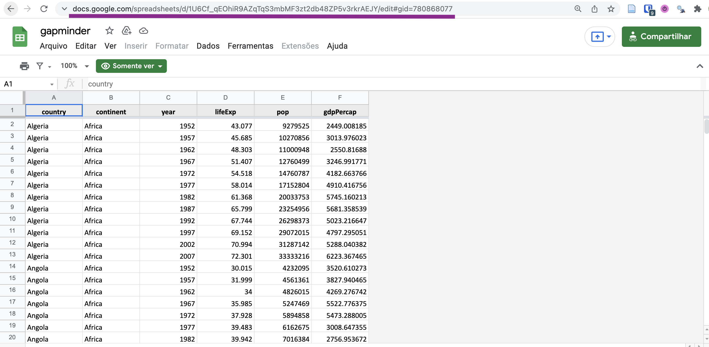
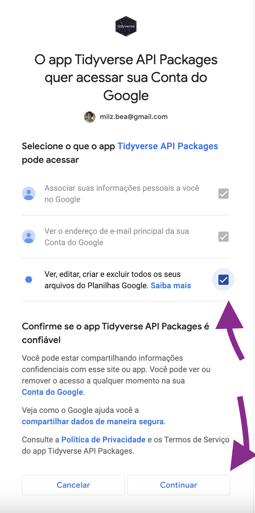
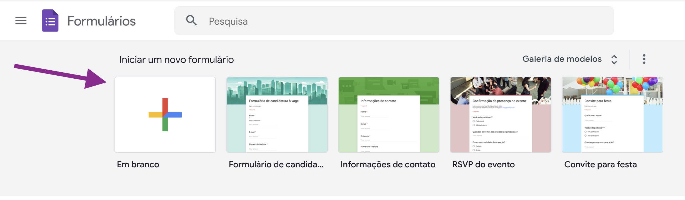
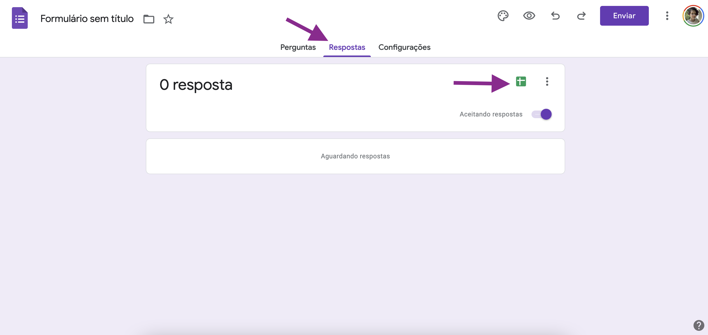
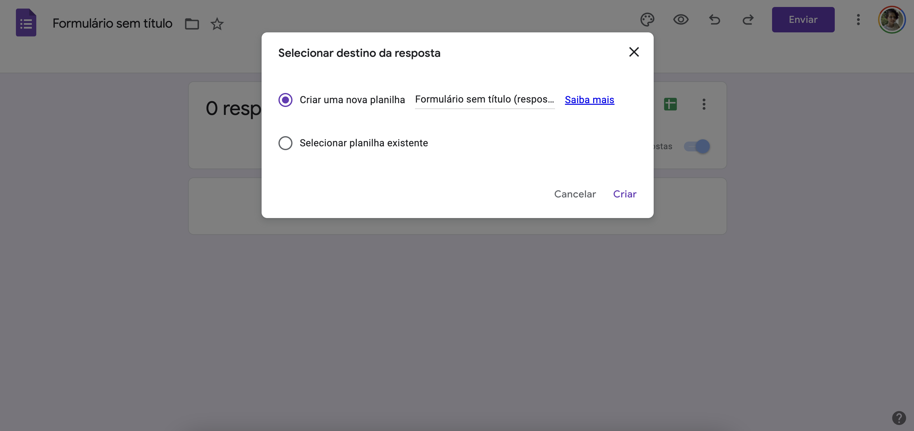
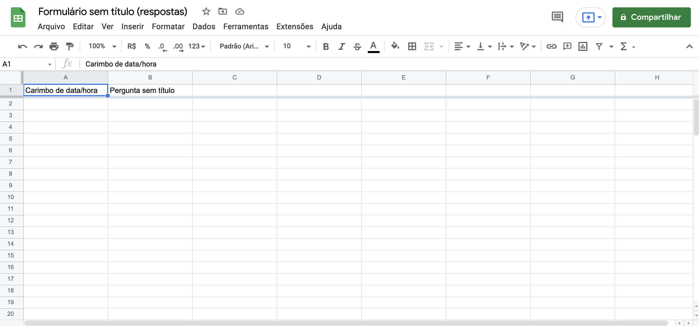

# Carregar pacote googlesheets4
library(googlesheets4)
Dica
Esse post foi origalmente publicado no blog da Curso-R.
Introdução
O Google Sheets é um editor de planilhas da Google, que funciona vinculado ao Google Drive (ou seja, os arquivos ficam na nuvem). O pacote googlesheets4 permite interagir com o Google Sheets através do R. Neste post, vamos mostrar alguns exemplos sobre como podemos importar dados usando o pacote googlesheets4.
Primeiramente, é necessário instalar o pacote:
install.packages("googlesheets4")Então, podemos carregá-lo:
Neste exemplo, usaremos a tabela da base de dados Gapminder, que apresenta algumas informações por país e ano, como a população total, expectativa de vida ao nascer e o PIB per capita.
Para importar uma tabela que está no Google Sheets, primeiramente precisamos identificá-la para que o R saiba qual arquivo queremos abrir. Uma forma de fazer isso é usando a URL (ou Uniform Resource Locator), que é também conhecido como o link que usamos no navegador.

Um exemplo de url é o seguinte, e ele encaminha para essa tabela.
https://docs.google.com/spreadsheets/d/1U6Cf_qEOhiR9AZqTqS3mbMF3zt2db48ZP5v3rkrAEJY/edit#gid=780868077Sabendo a URL da planilha, podemos salvar em um objeto no R para facilitar o uso!
# salvar a url/link da planilha que queremos acessar
url_planilha <- "https://docs.google.com/spreadsheets/d/1U6Cf_qEOhiR9AZqTqS3mbMF3zt2db48ZP5v3rkrAEJY/edit#gid=780868077"Autenticação
Para evitar que alguém que não tem acesso a uma Google Sheet consiga ler a mesma sem permissão, o pacote nos direciona para fazer uma autenticação com uma conta do Google. Esse direcionamento é feito quando usamos alguma função que necessita de autenticação pela primeira vez, e a cada sessão do R (ou seja, sempre que reiniciar), o R perguntará novamente com qual email do Google gostaríamos de autenticar.
Exemplo: No meu caso, eu já autentiquei anteriormente, então ele apresenta os emails já autenticados.
respostas_formulario <- read_sheet(url)
# → The googlesheets4 package is requesting access to your Google account
# Select a pre-authorised account or enter '0' to obtain a new token
# Press Esc/Ctrl + C to cancel
#
# 1: bmilz@curso-r.com
# 2: milz.bea@gmail.comPara fazer uma nova autenticação, basta escolher a opção 0, e uma janela do navegador abrirá para fazer a autenticação:
Precisamos então clicar no email desejado, selecionar todas as opções de acesso e clicar em “Continuar”:

Caso funcione, a seguinte mensagem aparecerá no navegador: Authentication complete. Please close this page and return to R. Isso significa que podemos voltar ao R!
DEU ERRO! Caso dê erro ao abrir o arquivo, se certifique que você tem acesso de leitura ou edição do Google Sheets desejado.
Agora podemos experimenta as funções do pacote!
Função sheet_properties()
A função sheet_properties() permite ver quais abas (chamaremos muitas vezes de sheets, pois é a forma usada no pacote) estão disponíveis na tabela:
# ver as propriedades da planilha (conseguimos descobrir quais sheets
# estão disponíveis)
sheet_properties(url_planilha)
## # A tibble: 5 × 8
## name index id type visible grid_rows grid_columns data
## <chr> <int> <int> <chr> <lgl> <int> <int> <list>
## 1 Africa 0 780868077 GRID TRUE 625 6 <NULL>
## 2 Americas 1 45759261 GRID TRUE 301 6 <NULL>
## 3 Asia 2 1984823455 GRID TRUE 397 6 <NULL>
## 4 Europe 3 1503562052 GRID TRUE 361 6 <NULL>
## 5 Oceania 4 1796776040 GRID TRUE 25 6 <NULL>Com isso, sabemos que a tabela que informamos tem 5 abas, sendo elas: Africa, Americas, Asia, Europe e Oceania.
Função read_sheet()
A função mais útil (na minha opinião) do pacote é a que usamos para ler os dados: read_sheet()!
Se usarmos essa função sem nenhum argumento além do url da planilha, por padrão a primeira sheet será importada. Como vimos no resultado da função sheet_properties(), a primeira aba da base contém os dados dos países que estão no continente Africano. Então os dados que serão importados são referentes à este continente:
planilha <- read_sheet(url_planilha)
dplyr::glimpse(planilha)
## Rows: 624
## Columns: 6
## $ country <chr> "Algeria", "Algeria", "Algeria", "Algeria", "Algeria", "Alge…
## $ continent <chr> "Africa", "Africa", "Africa", "Africa", "Africa", "Africa", …
## $ year <dbl> 1952, 1957, 1962, 1967, 1972, 1977, 1982, 1987, 1992, 1997, …
## $ lifeExp <dbl> 43.077, 45.685, 48.303, 51.407, 54.518, 58.014, 61.368, 65.7…
## $ pop <dbl> 9279525, 10270856, 11000948, 12760499, 14760787, 17152804, 2…
## $ gdpPercap <dbl> 2449.0082, 3013.9760, 2550.8169, 3246.9918, 4182.6638, 4910.…Podemos também usar o argumento sheet = para especificar qual aba queremos importar. Podemos fazer a busca pela posição (ou seja, informando um número), ou pelo nome da aba:
# abrir uma sheet específica: pela posição
planilha_sheet_3 <- read_sheet(url_planilha, sheet = 3)
dplyr::glimpse(planilha_sheet_3)
## Rows: 396
## Columns: 6
## $ country <chr> "Afghanistan", "Afghanistan", "Afghanistan", "Afghanistan", …
## $ continent <chr> "Asia", "Asia", "Asia", "Asia", "Asia", "Asia", "Asia", "Asi…
## $ year <dbl> 1952, 1957, 1962, 1967, 1972, 1977, 1982, 1987, 1992, 1997, …
## $ lifeExp <dbl> 28.801, 30.332, 31.997, 34.020, 36.088, 38.438, 39.854, 40.8…
## $ pop <dbl> 8425333, 9240934, 10267083, 11537966, 13079460, 14880372, 12…
## $ gdpPercap <dbl> 779.4453, 820.8530, 853.1007, 836.1971, 739.9811, 786.1134, …
# abrir uma sheet específica: pelo nome
planilha_asia <- read_sheet(url_planilha, sheet = "Asia")
dplyr::glimpse(planilha_asia)
## Rows: 396
## Columns: 6
## $ country <chr> "Afghanistan", "Afghanistan", "Afghanistan", "Afghanistan", …
## $ continent <chr> "Asia", "Asia", "Asia", "Asia", "Asia", "Asia", "Asia", "Asi…
## $ year <dbl> 1952, 1957, 1962, 1967, 1972, 1977, 1982, 1987, 1992, 1997, …
## $ lifeExp <dbl> 28.801, 30.332, 31.997, 34.020, 36.088, 38.438, 39.854, 40.8…
## $ pop <dbl> 8425333, 9240934, 10267083, 11537966, 13079460, 14880372, 12…
## $ gdpPercap <dbl> 779.4453, 820.8530, 853.1007, 836.1971, 739.9811, 786.1134, …Como todas as tabelas da base tem a mesma estrutura, podemos usar o pacote purrr para importar todas as abas de uma vez:
# a função sheet_names permite buscar apenas o nome das abas
nome_abas <- sheet_names(url_planilha)
# com o purrr, podemos abrir todas as abas de uma vez!
gapminder_completo <- nome_abas |>
purrr::map_dfr(~ read_sheet(url_planilha, sheet = .x))
dplyr::glimpse(gapminder_completo)
## Rows: 1,704
## Columns: 6
## $ country <chr> "Algeria", "Algeria", "Algeria", "Algeria", "Algeria", "Alge…
## $ continent <chr> "Africa", "Africa", "Africa", "Africa", "Africa", "Africa", …
## $ year <dbl> 1952, 1957, 1962, 1967, 1972, 1977, 1982, 1987, 1992, 1997, …
## $ lifeExp <dbl> 43.077, 45.685, 48.303, 51.407, 54.518, 58.014, 61.368, 65.7…
## $ pop <dbl> 9279525, 10270856, 11000948, 12760499, 14760787, 17152804, 2…
## $ gdpPercap <dbl> 2449.0082, 3013.9760, 2550.8169, 3246.9918, 4182.6638, 4910.…Outras funções
Esse pacote tem muitas outras funções que interagem com o Googles Sheets, mas que não fazem parte do escopo deste post, como criar uma nova aba e escrever dados em uma aba. Essas funções também são muito úteis!
E o Google Forms?
Eu gosto muito de usar esse pacote para importar respostas de formulários do Google, pois o Google permite vincular respostas dos formulários em uma Google Sheets.
Aqui mostrarei como fazer isso! Primeiro precisamos criar um formulário (caso ele ainda não exista):

Ao criar o formulário, podemos clicar em “Respostas” e então clicar no logo do Google Sheets (um quadrado verde com uma linha branca horizontal e outra vertical):

O Google Forms irá perguntar qual o nome da Google Sheet a ser criada (ou também podemos selecionar uma Google Sheets que já existe):

Depois de selecionar qual a Google Sheet ficará vinculada ao formulário, a Google Sheet será aberta e podemos ver as respostas:

Cada coluna terá informações de uma pergunta do formulário. Inicialmente, a base terá 0 linhas, pois quando criamos o formulário ele tem 0 respostas. Porém, após alguém responder o formulário, a Google Sheet é automaticamente atualizada e apresentará a resposta. Podemos importar os dados usando a função read_sheet(), como mostrado anteriormente:
url <- "https://docs.google.com/spreadsheets/d/1Ch3aMraacwhNo1sU4Z9b54nWYG8gdl18UfLJMzquL8s/"
respostas_formulario <- read_sheet(url)
respostas_formulario
## # A tibble: 1 × 2
## `Carimbo de data/hora` `Pergunta sem título`
## <dttm> <chr>
## 1 2022-03-08 21:29:01 Opção 1É isso! Dúvidas, sugestões e críticas, mande aqui nos comentários. Postem também quais funções do pacote vocês gostariam de saber mais!!
Até a próxima!